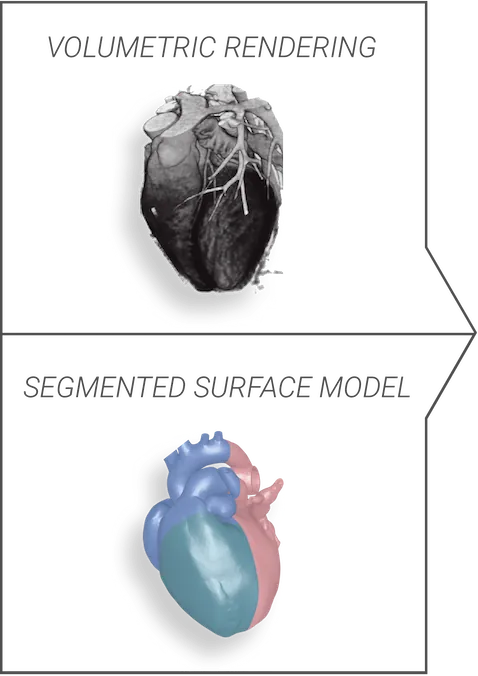
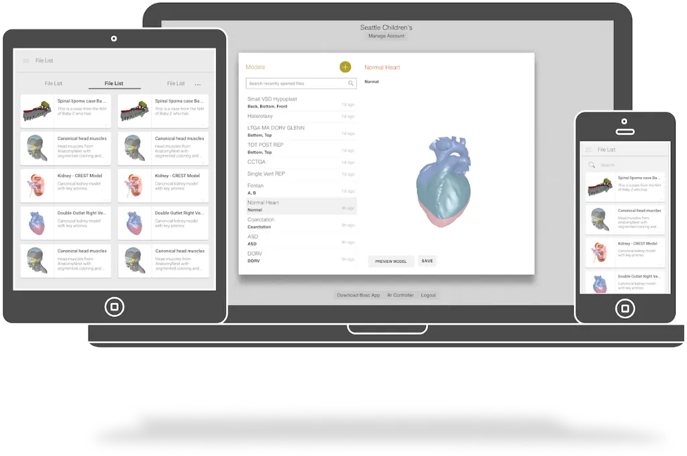
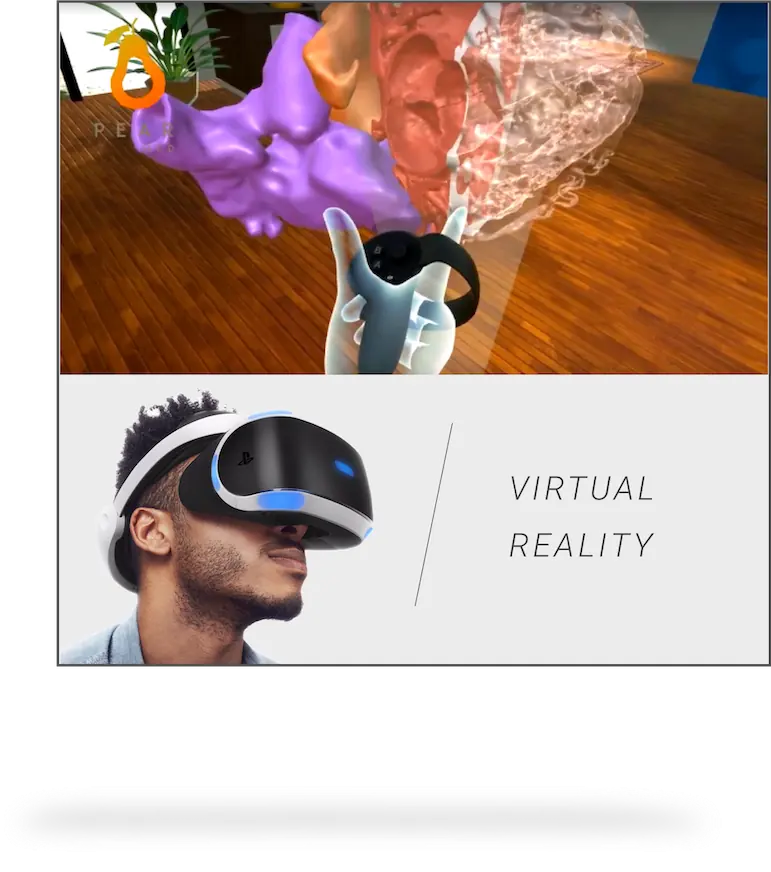
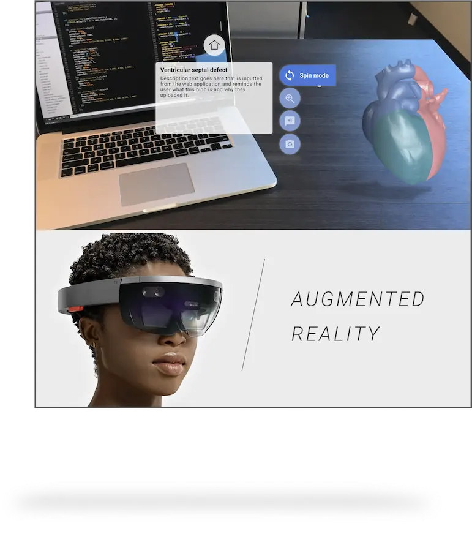
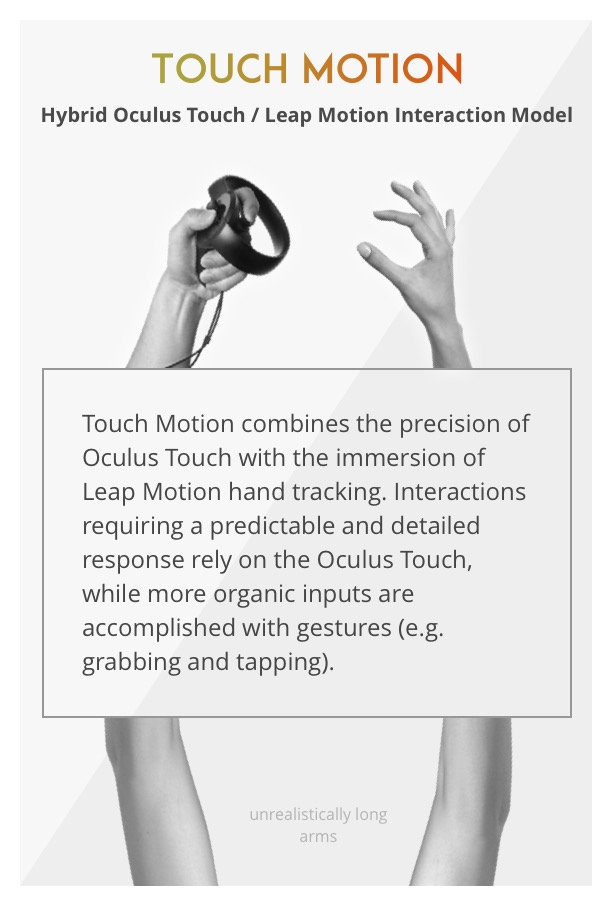
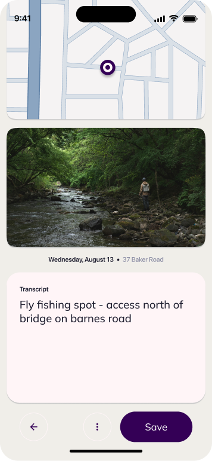
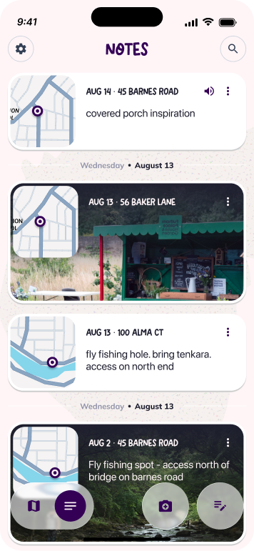
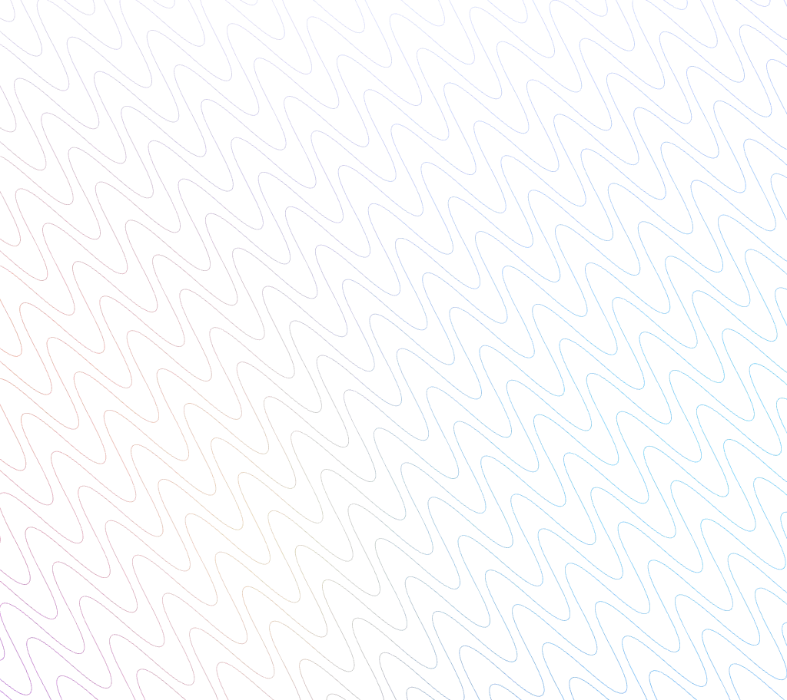

I’m a human product designer in Brooklyn, NY. I shifted into UX
after a few years bumbling around pig, sql and excel, and have since
spent most of my time in hiring and med tech. Today I’m one of two
principal designers in a ~150 person UX org; focused on using AI
to make hiring and job hunting less painful and more fair.
Earnest people, potent coffee, and post-its are core to my
professional love language.
Landman, J., Safiullah, S., Clayman R., … Laughery, M. (2017)
Three-dimensional Kidney Model Development for Virtual Reality.
Paper presented at the annual Engineering and Urology conference
in Boston, MA.
Safiullah, S., Patel R., Lama, D., … Laughery, M. (2017)
Evaluation of a 3D Virtual Reality Model for Surgical Planning
and Education. Paper presented at the annual World Congress of
Endourology in Vancouver, B.C.
Indeed’s venture bet on an agentic solution for large employers.
Selected to lead the 12-person design team. Drove vision and helped
work back from inception to 4000+ companies. AI strategy highlighted
by CEO as key driver of recent pecuniary success. (Bloomberg)
UX Lead. Co-created with MDs from the hallways of UW into four
major hospitals, and several studies and conferences. The core
product was a mixed reality DICOM viewer for perioperative
education that takes in voxel media - either segmented or raw
CT/MRI data - and makes it easy to explore fine structures and
pathology.
Imaging input
Model management
Virtual reality
Augmented reality




Exploring methods for model interaction in spatial environments

Pyrus
Case study
Exploring methods for model interaction in spatial environments
Sole designer and “developer.” Built to help regional trail
management organizations document trail issues. Primary function
includes location-based notes and photos so crews can quickly
capture and document issues while they're in the field with limited
cell service.


End-to-end design and iOS development
PrepTrack
i
Role
Volunteer UX
With
An org out of Cambridge University
Volunteer UX for an org out of Cambridge University that simplifies
PrEP adherence. Provided low-cost UX suggestions end to end, built
a design system, and offered some vision flows.

Past
Update
Design system revamp · Heuristic eval and flow mapping
From peer reviews
“Mark is my north star for how I want to work and communicate
about my work. His work is creative, he keeps a huge audience
informed, and he produces more work than anyone else I know.”
2024, Meghna, UX peer
“Mark might be the best designer I've worked with in my career.”
2024, Jason Ford, Product Director
“True passion about Indeed product and drive to make an impact.
Visionary thinking and ability to push for change while bringing
others on the journey.”
2023, Laurie Sheflin, Product Director
“Mark’s work pushes innovation and quality. His designs are
inspiringly thorough, thoughtful, and beautiful. He is
supportive, smart, fun to collaborate with, and is someone I
look up to at Indeed.”